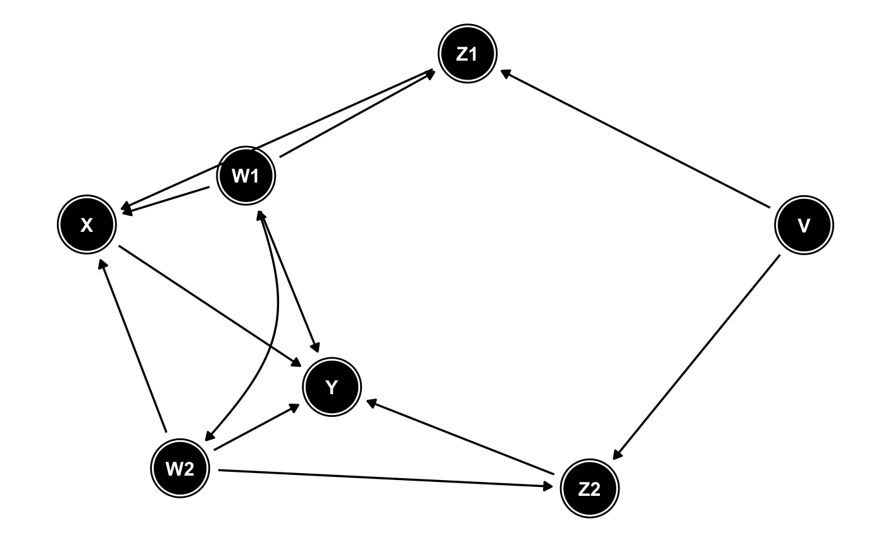

Tidy a dagitty object
tidy_dagitty(.dagitty, seed = NULL, layout = "nicely", ...)
| .dagitty | a |
|---|---|
| seed | a numeric seed for reproducible layout generation |
| layout | a layout available in |
| ... | optional arguments passed to |
a tidy_dagitty object
library(dagitty) library(ggplot2) dag <- dagitty( "dag { Y <- X <- Z1 <- V -> Z2 -> Y Z1 <- W1 <-> W2 -> Z2 X <- W1 -> Y X <- W2 -> Y X [exposure] Y [outcome] }") tidy_dagitty(dag)#> # A DAG with 7 nodes and 12 edges #> # #> # Exposure: X #> # Outcome: Y #> # #> # A tibble: 13 x 8 #> name x y direction to xend yend circular #> <chr> <dbl> <dbl> <fct> <chr> <dbl> <dbl> <lgl> #> 1 V 7.54 10.2 -> Z1 6.16 10.0 FALSE #> 2 V 7.54 10.2 -> Z2 7.68 8.78 FALSE #> 3 W1 6.17 9.00 -> X 5.60 8.68 FALSE #> 4 W1 6.17 9.00 -> Y 6.39 7.90 FALSE #> 5 W1 6.17 9.00 -> Z1 6.16 10.0 FALSE #> 6 W1 6.17 9.00 <-> W2 6.86 8.28 FALSE #> 7 W2 6.86 8.28 -> X 5.60 8.68 FALSE #> 8 W2 6.86 8.28 -> Y 6.39 7.90 FALSE #> 9 W2 6.86 8.28 -> Z2 7.68 8.78 FALSE #> 10 X 5.60 8.68 -> Y 6.39 7.90 FALSE #> 11 Z1 6.16 10.0 -> X 5.60 8.68 FALSE #> 12 Z2 7.68 8.78 -> Y 6.39 7.90 FALSE #> 13 Y 6.39 7.90 NA NA NA NA FALSEtidy_dagitty(dag, layout = "fr") %>% ggplot(aes(x = x, y = y, xend = xend, yend = yend)) + geom_dag_node() + geom_dag_text() + geom_dag_edges() + theme_dag()